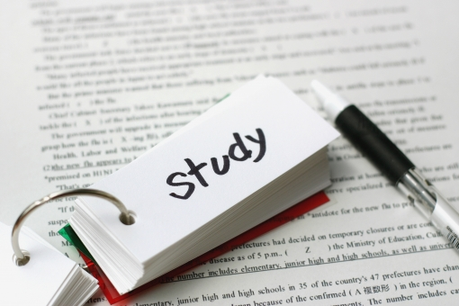

About Overnight Soaking
Overnight cramming is a method of studying in which you cram the entire test range the day before the exam, which has the disadvantages of very short time spent studying, shortened sleep time instead of cosiness, and fatigue if you are not accustomed to it.
However, once you get used to it, it becomes an examination strategy with few disadvantages.
The success of overnight cramming depends on how well you can sustain your own motivation to study. It is also necessary to have a strong mental attitude that can overcome the weakness of “I think I can go to sleep now” or “If I just do this, I will be fine. In other words, the benefit of mastering the overnight method is that you will naturally become mentally stronger.
However, it is not so easy for beginners to quickly create a mentality that can withstand overnight soaking. Therefore, we recommend that you create a feeling of “I'm going to get through the exam by cramming overnight!” I recommend that you create a feeling of “I'm going to get through the exam by soaking myself overnight! This way, you should be able to endure the one-night stand even if you do not have a strong mental attitude.